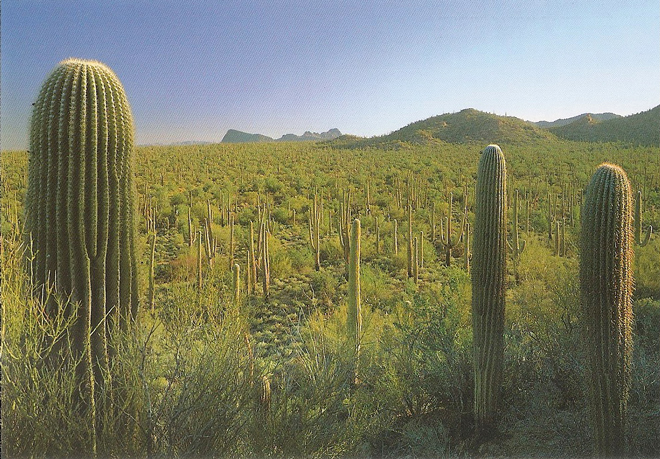
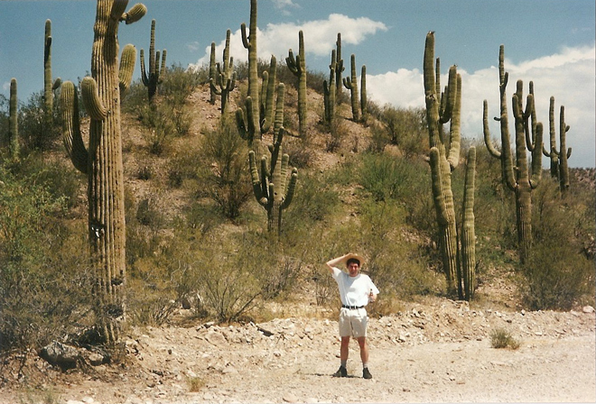
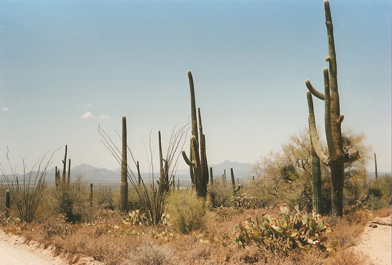
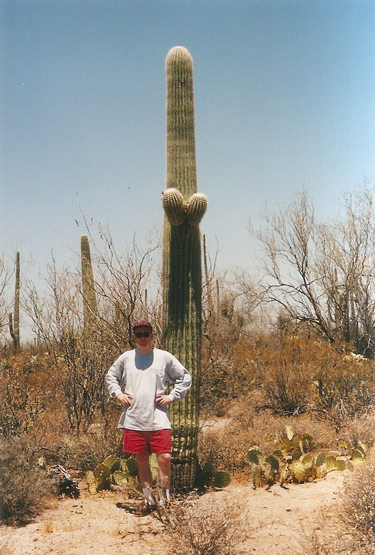
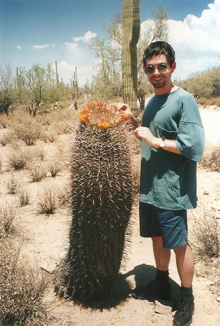
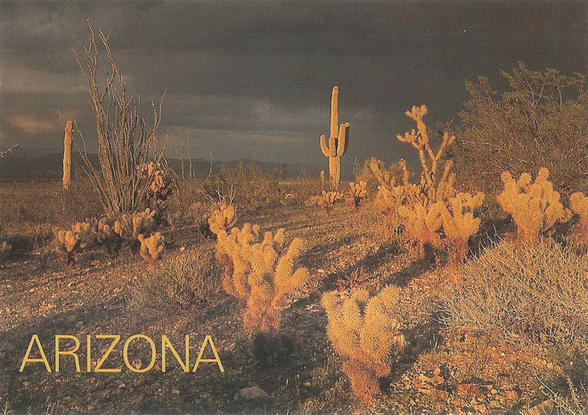
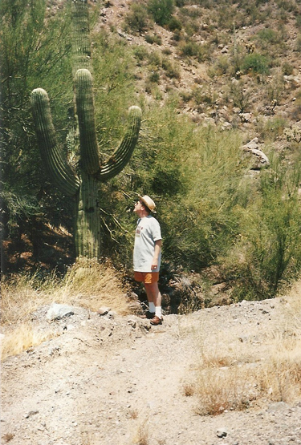
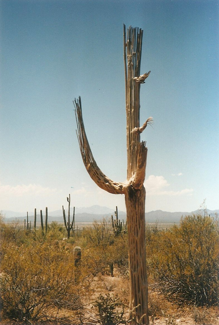
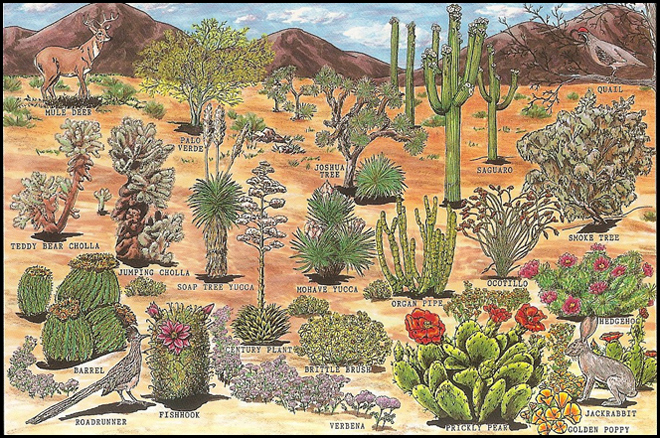
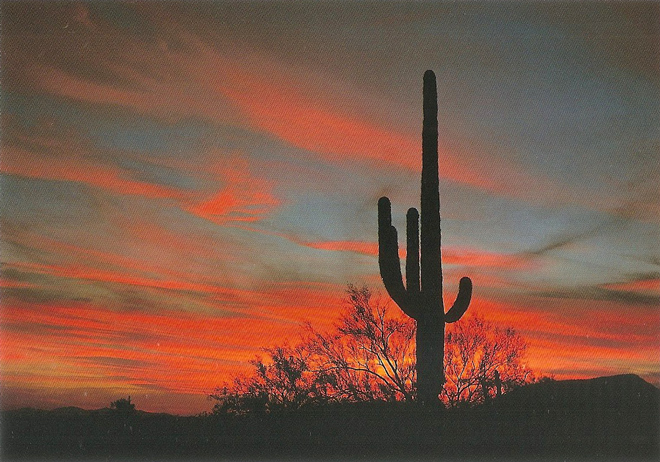

.
Saguaro National Park is in Pima County, south-eastern Arizona. The 92,000-acre park consists of two separate areas - the Tucson Mountain District (TMD) about 10 miles west of the city of Tucson and the Rincon Mountain District (RMD) about 10 miles east of the city - both of which preserve Sonoran Desert landscapes, fauna and flora - including the giant saguaro cactus.





Saguaros, which flourish in both districts of the park, grow at an exceptionally slow rate. The first arm of a saguaro typically appears when the cactus is between 50 and 70 years old though it may be closer to 100 years in places where precipitation is very low. Saguaros may live as long as 200 years and are considered mature at about age 125.
A mature saguaro may grow up to 60 feet (18 m) tall and weigh up to 4,800 pounds (2,200 kg) when fully hydrated. The total number of saguaros in the park is estimated at 1.8 million, and 24 other species of cactus are abundant.



